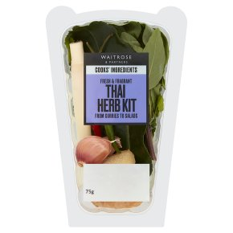
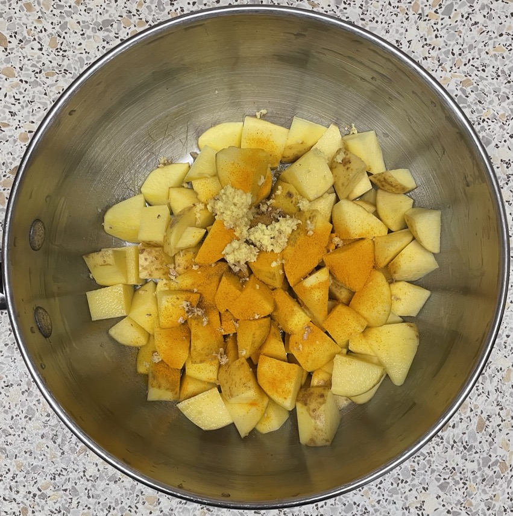

Yellow Thai curry
Paste (2 portions)
- Chop then blend until smooth
- 2 shallots
- 1 whole garlic peeled and chopped
- 2 sticks lemongrass outer leaves removed
- 40g ginger
- 4 chillies
- 4 lime leaves
- 1 tsp ground turmeric
- 1 tsp ground coriander
- ½ tsp ground cumin
- 1 tsp salt
- 4 tbsp coconut milk
Potatoes
- Boil until cooked
- 400g new potatoes in bite-size pieces
- 5g ginger grated
- 1 tsp turmeric
- ½ tsp cumin
Curry
- Stir fry for 5 mins until darkens
- 1 tbsp vegetable oil
- 1 portion curry paste
- 400g chicken (if no prawns)
- Add and bring to simmer
- 1 tin coconut milk
- 100ml water (rinse out coconut milk tin)
- 1 tsp cornflour in 2 tsp water
- Add and cook for 8 mins until beans cooked
- 200g green beans / sugar snap peas
- potatoes cooked
- Add and cook for 3-4 mins
Serving
- Portions: 3-4 (only 2 of prawns)
- Jasmine rice
- Seaweed squares
Notes
Pics
Waitrose

